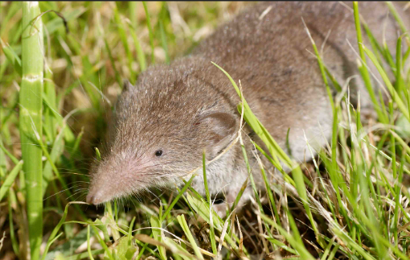

De tous les animaux dont les femelles allaitent leurs petits grace à leurs mamelles, le plus petit est une musaraigne.
Cette minuscule musaraigne mesure entre 3,5 cm et 5 cm sans la queue et pèse entre 1,5 et 2g
Les musaraignes sont très voraces. Certains avalent jusqu'a 2 fois leur pas jour.
Quand elle se promène, maman musaraigne ne risque pas de perdre ses petits. Ils sont tous solidement agrippés les uns aux autres derrière elle. Meme si on soulève la maman, tous les petits restent accrochés.